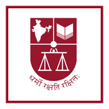
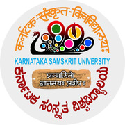
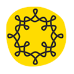
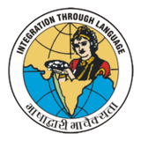
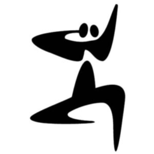
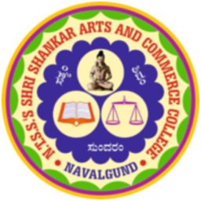
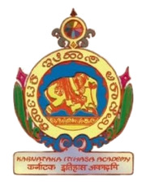
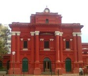

Partners
Built with libraries, universities and communities.
Every collection SOK digitises belongs to the institution that holds it. Digitisation costs the institution nothing beyond time and access.

National Law School of India University33,000+ books digitised, 2022–2025 Indian Academy of SciencesSOK's founding project, since 2018Azim Premji UniversityMoU for library & archive digitisation
Indian Academy of SciencesSOK's founding project, since 2018Azim Premji UniversityMoU for library & archive digitisation Kannada University, HampiMoU: PhD dissertations & rare booksRoja Muthiah Research Library, ChennaiCollection digitisation partnerDr. B.R. Ambedkar University, DelhiLegal & copyright guidance
Kannada University, HampiMoU: PhD dissertations & rare booksRoja Muthiah Research Library, ChennaiCollection digitisation partnerDr. B.R. Ambedkar University, DelhiLegal & copyright guidance
Karnataka Samskrit University1,364 items on the Internet Archive Vijaya Evening College142 items on the Internet Archive
Vijaya Evening College142 items on the Internet Archive Karnataka Gandhi Smaraka Nidhi11,700-book library, digitised in 3 months
Karnataka Gandhi Smaraka Nidhi11,700-book library, digitised in 3 monthsTelangana Gandhi Smaraka NidhiContributing collection partner
Andhra Pradesh Gandhi Smaraka NidhiContributing collection partner
National Gandhi Museum, New DelhiRecipient of digitised collection Gandhi Museum, MaduraiRecipient of digitised collection
Gandhi Museum, MaduraiRecipient of digitised collection RBANM's Educational CharitiesDigital library gift & event partner
RBANM's Educational CharitiesDigital library gift & event partner Bengaluru Science Gallery20,000-book digital library, 2025
Bengaluru Science Gallery20,000-book digital library, 2025 Lalbagh Botanical Gardens6,300-book horticulture library
Lalbagh Botanical Gardens6,300-book horticulture library
SOCHARACommunity health archive digitisation
Vishwakonkani Centre, MangaluruCollection digitisation partnerLoka Shikshana Trust, HubballiCollection digitisation partner

Neenasam & Akshara PublicationsHeggodu literary archive Karnataka Arebhashe Culture and Literature Academy263 items on the Internet Archive
Karnataka Arebhashe Culture and Literature Academy263 items on the Internet Archive B M Sri PratishtanaKannada literary archive
B M Sri PratishtanaKannada literary archive Nava KarnatakaPublishing archive partner
Nava KarnatakaPublishing archive partnerUdaya Bhanu Kala SanghaCultural archive partner
United Lodge of TheosophistsCollection digitisation partner
Shree Shankar College, NavalgundCollection digitisation partner
Karnataka Itihasa Academy33 items on the Internet Archive Karnataka Tulu Sahitya Academy265 items on the Internet Archive
Karnataka Tulu Sahitya Academy265 items on the Internet Archive Karnataka Archaeology Dept.MoU for the Mysuru heritage libraryAnaji Grantha Sangraha Collection50 items on the Internet Archive
Karnataka Archaeology Dept.MoU for the Mysuru heritage libraryAnaji Grantha Sangraha Collection50 items on the Internet Archive
Bengaluru Museum LibraryCollection set up on the Internet Archive Mysore Palace LibraryCollection set up on the Internet ArchiveKalanidhi Studio ArchiveCollection set up on the Internet ArchiveRangamancha ArchiveCollection set up on the Internet Archive
Mysore Palace LibraryCollection set up on the Internet ArchiveKalanidhi Studio ArchiveCollection set up on the Internet ArchiveRangamancha ArchiveCollection set up on the Internet Archive IDIABraille & DAISY access for law studentsInternet ArchiveOpen-source scanner design & hostingIndian KanoonOCR & search infrastructure, led by Dr. Sushant Sinha
IDIABraille & DAISY access for law studentsInternet ArchiveOpen-source scanner design & hostingIndian KanoonOCR & search infrastructure, led by Dr. Sushant Sinha